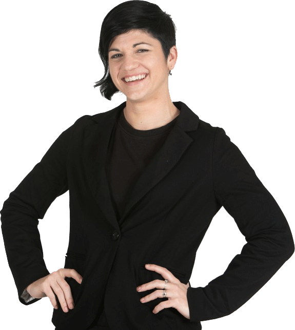

About Us
Throw away your boring old grammar book and your dictionary!
When it comes to learning English, we believe in Connection NOT Perfection!
Come hang out with Lindsay, Michelle, and Jessica on the All Ears English Podcast!
We are here to help you relax, have fun, and learn real, natural English.
You will also find out more about American culture, why American people do what they do, and how you can feel more comfortable living in the United States.
Our Meeting Monday conversations connect you with current cultural topics. Teaching tuesdays help you understand idioms, phrases and culture. Wisdom Wednesdays tell you strategies for learning faster and better. Deep Thoughts Thursdays give you motivation and inspiration.
Meet Your Teachers
Lindsay McMahon
"The English Adventurer"
MA Intercultural Relations, TESOL Certificate
Hi everyone! I want to help you finally move beyond your current level of English.
I have been teaching English as a Second Language (ESL) for more than 10 years.
I have taught in Japan, Argentina, Guatemala, New York City, and here in Boston. In my free time, I like to travel and explore, work on my Spanish, and meet new people.
Michelle Kaplan
"The New York Radio Girl"
MA TESOL, BA Arts/Theatre
I am originally from Washington, D.C., but moved to New York nearly five years ago.
I received my MA is TESOL at The New School in 2014 and have been working in the field ever since. I studied theatre in college and worked in broadcast and radio for several years.
I believe learning should be more than just sitting down and studying. I feel if students are motivated by a fun classroom atmosphere and interesting subject matter, they will learn the language in a more effective way. I enjoy teaching pronunciation and have a special passion for teaching English through music, television, and movies.
Travel is a huge passion of mine. I also love singing, writing and playing music, and comedy. I have even been known to bring in my guitar and sing in the classroom to create a lesson. Thanks for listenting!
Jessica Beck
"The Preparation Pro"
MA TESOL, BA Arts/Theatre

Much of the first half of my career was spent in Taipei, Taiwan, and now I live in the fabulous city of Portland, Oregon.
Whether I'm teaching test preparation or conversation, I believe that the best way to learn is by using new information in fun and motivating ways.
In my free time, I delight in exploring this amazing world with my son, running around with my dog, reading comic books, watching sci-fi and stand-up comedy, and cheering for the Portland Timbers.